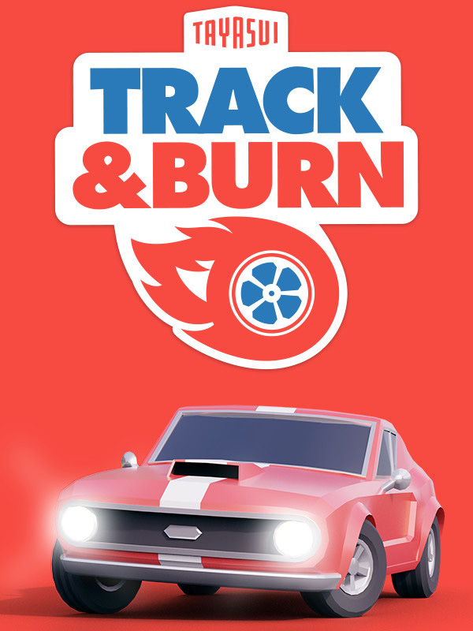

Track and Burn
Track and Burn
Details
|  | |
| Spielzeit | Nicht gespielt |
| Letzte Aktivität | Nie |
| Hinzugefügt | 25.06.2022 13:12:26 |
| Modifiziert | 10.11.2022 13:46:45 |
| Fertigstellungsstatus | Not Played |
| Bibliothek | Steam |
| Quelle | Steam |
| Plattform | PC (Windows) |
| Veröffentlichungsdatum | 02.11.2021 |
| Community Bewertungen | 67 |
| Kritiker Punkte | |
| Benutzerwertung | |
| Genre | Casual Free to Play Indie Racing |
| Entwickler | Tayasui |
| Verleger | Tayasui |
| Eigenschaft | Single Player |
| Links | Communityhub Diskussionen Guides Neuigkeiten Shopseite PCGamingWiki |
| Tag | |
Beschreibung
Track & Burn is a stylish free-to-play racing game, combining the best of old school racing with custom track-building. Zip through urban cityscapes. Design your own tracks. Compete with the community. And burn some rubber!
WISHLIST TRACK & BURN

JOIN OUR COMMUNITY
Hi Track & Burn early adopters! 🏁 Thanks for dropping by.
Wanna be on the inside track? Follow us on social media to hang out with the community, chat with us, and be the first to hear about new updates & events.
Follow us on Twitter @tranckandburn
Instagram @tracknburn
Wishlist on Steam to get notified when the game goes live!

Track & Burn is a stylish free-to-play racing game, set in the 70s. The spiritual successor to legendary titles like ‘Driver’ & ‘Trackmania’, it combines the best of old school racing with custom track-building. Built by a veteran Parisian team with a passion for motorsports & effortlessly elegant French design.

🚘 Burn some rubber & make some noise!
Race fun-to-handle muscle cars through chic cityscapes. Flex your driving skills. And rip up the road. Realistic speeds, no coins, no boosts, no minimap & no fake drift. In Track & Burn, it’s all about the car, the road, and your true racing grit.

🔧 Become the ultimate track-builder!
Build and share your own custom tracks - with a variety of track pieces & combinations to choose from. Challenge the community with lethal loops & breakneck bends. Try out user-generated tracks. Embrace your inner architect with quirky designs. Or just build a straight line. We don’t judge ;)

🏁 Compete with friends. Or take on the world. Show the Track & Burn community what you’ve got via racing ghosts, world leaderboards, special Mini Cups & more.
Note: Only selected competitive features will be available in the game during Early Access.

FREE UPDATES
Around the launch of Early Access, Track & Burn will include one racing level, track-building features, one track-building environment, the ability to race against ghosts & more.
But we plan on bringing FREE CONTENT DROPS & UPDATES to Track & Burn across Early Access and beyond, including:
Keep an eye on our social media channels for updates & early sneak peeks.
PREMIUM CUSTOMISATION & EXTRAS
The Early Access version of Track & Burn will not offer any paid extras. But when the game is fully launched on Steam, we hope to offer a variety of epic premium customisation options like special paint jobs, bonus environments & even more set pieces, in addition to all the great stuff that’s freely available in the base game.
These will be paid add-ons. But don’t worry - we hate ‘pay-to-win’ as much as you do. Track & Burn’s premium extras will always be just that...extras! No game advantage. No getting trounced by the player with the deepest pockets. Just some good old fashioned *goodies*, for anyone who wants them 👌
& MORE
We’ve got big plans for Track & Burn. We hope to bring the game to more platforms in the future, reaching an even wider community of motorsports fans.

Tayasui is a Parisian development studio with a passion for simple, elegant design. With over 10 years of experience in mobile apps, the team is incredibly excited to be launching Track & Burn as their first title for the PC & Mac market.
WISHLIST TRACK & BURN
JOIN OUR COMMUNITY
Hi Track & Burn early adopters! 🏁 Thanks for dropping by.
Wanna be on the inside track? Follow us on social media to hang out with the community, chat with us, and be the first to hear about new updates & events.
Follow us on Twitter @tranckandburn
Instagram @tracknburn
Wishlist on Steam to get notified when the game goes live!
Track & Burn is a stylish free-to-play racing game, set in the 70s. The spiritual successor to legendary titles like ‘Driver’ & ‘Trackmania’, it combines the best of old school racing with custom track-building. Built by a veteran Parisian team with a passion for motorsports & effortlessly elegant French design.
🚘 Burn some rubber & make some noise!
Race fun-to-handle muscle cars through chic cityscapes. Flex your driving skills. And rip up the road. Realistic speeds, no coins, no boosts, no minimap & no fake drift. In Track & Burn, it’s all about the car, the road, and your true racing grit.
🔧 Become the ultimate track-builder!
Build and share your own custom tracks - with a variety of track pieces & combinations to choose from. Challenge the community with lethal loops & breakneck bends. Try out user-generated tracks. Embrace your inner architect with quirky designs. Or just build a straight line. We don’t judge ;)
🏁 Compete with friends. Or take on the world. Show the Track & Burn community what you’ve got via racing ghosts, world leaderboards, special Mini Cups & more.
Note: Only selected competitive features will be available in the game during Early Access.
FREE UPDATES
Around the launch of Early Access, Track & Burn will include one racing level, track-building features, one track-building environment, the ability to race against ghosts & more.
But we plan on bringing FREE CONTENT DROPS & UPDATES to Track & Burn across Early Access and beyond, including:
- New tracks
- New environments
- New paint jobs & stickers
- New challenges
Keep an eye on our social media channels for updates & early sneak peeks.
PREMIUM CUSTOMISATION & EXTRAS
The Early Access version of Track & Burn will not offer any paid extras. But when the game is fully launched on Steam, we hope to offer a variety of epic premium customisation options like special paint jobs, bonus environments & even more set pieces, in addition to all the great stuff that’s freely available in the base game.
These will be paid add-ons. But don’t worry - we hate ‘pay-to-win’ as much as you do. Track & Burn’s premium extras will always be just that...extras! No game advantage. No getting trounced by the player with the deepest pockets. Just some good old fashioned *goodies*, for anyone who wants them 👌
& MORE
We’ve got big plans for Track & Burn. We hope to bring the game to more platforms in the future, reaching an even wider community of motorsports fans.
Tayasui is a Parisian development studio with a passion for simple, elegant design. With over 10 years of experience in mobile apps, the team is incredibly excited to be launching Track & Burn as their first title for the PC & Mac market.